Clarity first
Make the most important information visible before asking users to explore deeper.
FAIR is an AI-powered platform that brings together football chat, player scouting, predictive analytics, and performance reporting in a single product — a combination that didn't exist in the market. I led the design end to end: aligning with founders on the vision, translating market research into a scoped MVP, defining the information architecture, and shipping a complete set of high-fidelity flows. I then ran usability testing that surfaced two significant interaction problems and resolved both before launch.
Football generates an enormous amount of information across every match: from player movement and positioning to events, statistics, and video. FAIR brings these different layers together and uses AI to turn complex match data into insights that researchers and analysts can actually explore.
FAIR brings together multiple layers of football data, but presenting more information doesn't automatically make it more useful. The challenge was to create an interface that could handle this complexity while helping users quickly understand what matters, explore deeper patterns, and connect AI-generated insights back to the game.
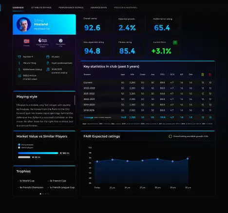
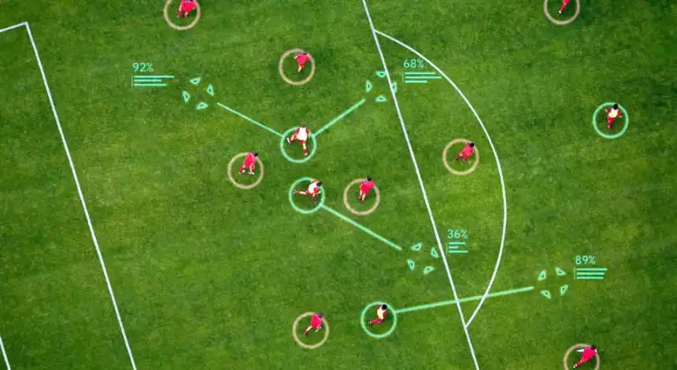
Make the most important information visible before asking users to explore deeper.
Use familiar football concepts—players, pitch, movement, events—as the foundation for navigating complex data.
Don't just tell users what the AI found. Show the context that helps them understand why it matters.
Identity, position, team and high-level performance at a glance.
Attack, passing, defense and other metrics separated into meaningful groups.
Heatmap and performance trend provide context beyond raw numbers.
Turns the underlying data into a readable performance summary.
Football is inherently spatial. Instead of relying only on tables and statistics, I used the pitch as a familiar visual language for understanding positioning, movement and areas of influence.
FAIR combines performance data with AI-generated analysis to help users interpret what they're seeing. Rather than presenting AI as a separate chatbot, I integrated it directly into the performance report alongside the data it is interpreting.
FAIR Chat: The conversational heart of the product — no filters or dashboards to learn, just ask. Answers can be replayed, copied, or rated, and every chat is saved.
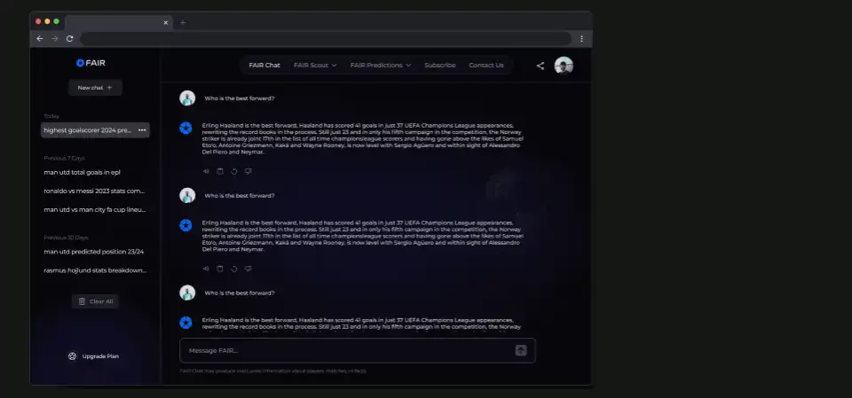
Scout Report: A player's full story in one place. The summary ratings sit up top, and everything supporting them — season history, style notes, value, honours — sits below in tabs.
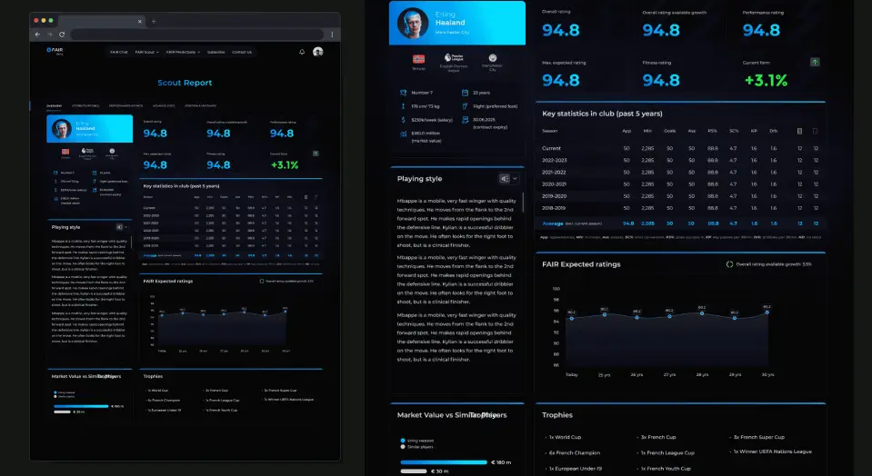
My Scout List: A saved shortlist of players you're tracking. Pick up to four and compare them side by side — this came directly out of testing, where users found it slow to weigh one player against another.
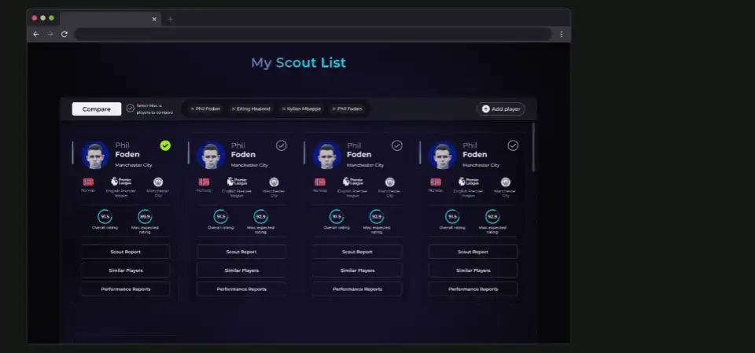
Player Performance Report: Headline ratings and an AI summary answer the question immediately; the stat grid, heatmap, and 15-match trendline let a scout verify it. The same screen serves both users without compromising either.
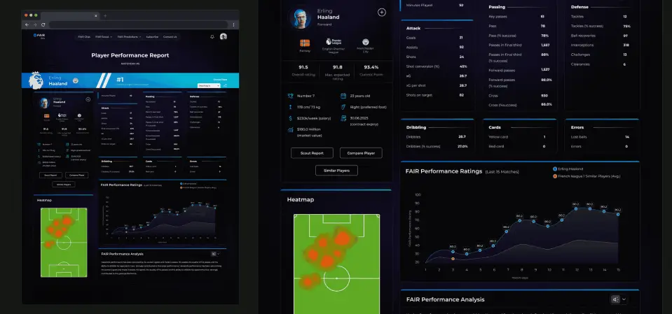
Lots of meetings, tons of caffeine — what we achieved!
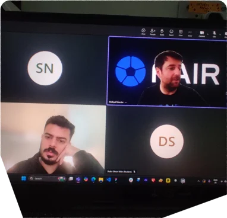
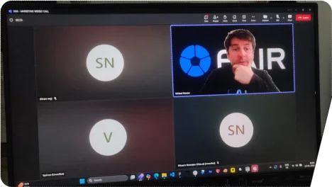
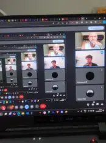
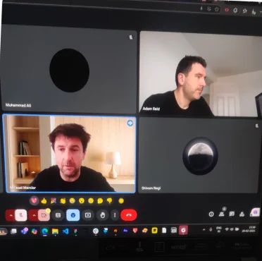
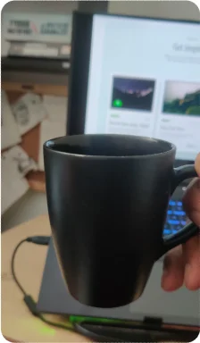